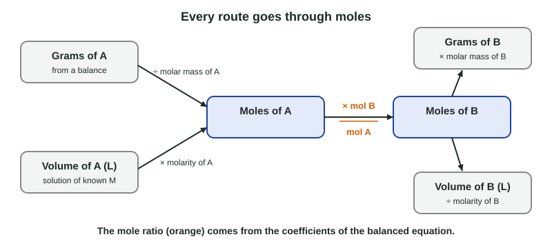

Stoichiometry
Coefficients relate moles, so every stoichiometry problem converts to moles, uses a mole ratio from the balanced equation, and converts back.
Part 1 · Hook
Why this matters
Part 2 · Before you start
What this builds on
Part 3 · Prerequisite check
Quick check before you start
1. How many moles are in 9.01 g of water (18.02 g/mol)?
- 0.500 mol
- 162 mol
- 2.00 mol
- 0.0500 mol
Show the answer
9.01 g ÷ 18.02 g/mol = 0.500 mol.
- Correct: 0.500 mol:
- 162 mol:
- 2.00 mol:
- 0.0500 mol:
2. How many moles of solute are in 0.0250 L of 0.200 M solution?
- 0.00500 mol
- 8.00 mol
- 0.125 mol
- 0.200 mol
Show the answer
Moles = M × V = 0.200 mol/L × 0.0250 L = 0.00500 mol.
- Correct: 0.00500 mol:
- 8.00 mol:
- 0.125 mol:
- 0.200 mol:
3. A Before box has 3 X₂ and 6 Y₂; they react by X₂ + 3Y₂ → 2XY₃. What is left over?
- 1 X₂
- 3 Y₂
- Nothing
- 2 X₂
Show the answer
6 Y₂ use 2 X₂, so 1 X₂ is left in excess.
- Correct: 1 X₂:
- 3 Y₂:
- Nothing:
- 2 X₂:
Part 4 · See it
See it first

Part 5 · Step by step
How it works, step by step
- Coefficients count particles, and so molesa mole ratio from the equation converts moles of one substance into moles of another
- Balances measure grams and glassware measures volumesyou convert to moles first with molar mass or molarity
- One reactant runs out firstit alone sets the theoretical yield; the other is left in excess
- Real products are lost, wet or impureactual yield differs from theoretical, measured as percent yield
Part 6 · Key ideas
Key ideas
- Stoichiometry: grams → moles (÷ molar mass) → mole ratio from coefficients → moles → grams (× molar mass).
- For a solution, moles = molarity × volume in liters.
- Limiting reactant: find how much product each reactant could make; the smaller amount wins. Never compare grams.
- Percent yield = actual ÷ theoretical × 100. Gravimetric analysis weighs a dried precipitate to find how much of an ion was present.
Part 7 · Misconception
A common mistake
The wrong idea: The reactant with the smaller mass, or the smaller number of moles, is the limiting reactant.
What actually happens: The limiting reactant is the one that makes less product. Convert each reactant to moles and use the mole ratio: a reactant with more moles can still run out first if the equation needs more of it.
Part 8 · Check yourself
Check yourself
Exam-style questions. Anything you miss goes into your review queue.
Graph
Precipitate as iodide is added
A student pipets 25.0 mL of a lead(II) nitrate solution of unknown concentration into each of seven beakers. A different volume of 0.100 M KI is added to each. The yellow PbI₂ (molar mass 461.0 g/mol) is filtered, dried to constant mass and weighed. Pb²⁺(aq) + 2I⁻(aq) → PbI₂(s).
Data table
| Volume of 0.100 M KI added (mL) | Measured |
|---|---|
| 0 | 0 |
| 10 | 0.229 |
| 20 | 0.463 |
| 30 | 0.69 |
| 40 | 0.92 |
| 50 | 0.922 |
| 60 | 0.922 |
1. In the beaker with 20.0 mL of KI added, which reactant is limiting?
- I⁻, since more KI would still make more solid
- Pb²⁺, since the mass of solid has stopped rising there
- Pb²⁺, since the lead solution has the larger volume
- Neither, since the ions react in a fixed 1 : 2 ratio
Show the answer
At 20.0 mL the mass is still rising with volume: beakers with more KI made more solid. So iodide runs out first there, and lead ions are left in excess. The mass stops rising only after about 40 mL.
- Correct: I⁻, since more KI would still make more solid: Right: on the rising part of the graph, iodide is the limiting reactant.
- Pb²⁺, since the mass of solid has stopped rising there: The mass levels off near 40 mL, not at 20 mL; at 20 mL it is still rising.
- Pb²⁺, since the lead solution has the larger volume: Volume alone does not decide; it is the moles of each ion and the 1 : 2 ratio needed.
- Neither, since the ions react in a fixed 1 : 2 ratio: The ratio of the equation is fixed, but the amounts mixed are not; at 20 mL there are not enough I⁻ ions for every Pb²⁺.
2. Use the mass of PbI₂ where the graph levels off (0.922 g) to find the molarity of the lead(II) nitrate solution.
Type a number and its unit.
Show the answer
Where the graph is flat, all the Pb²⁺ has precipitated. 0.922 g ÷ 461.0 g/mol = 0.00200 mol PbI₂ = 0.00200 mol Pb²⁺ (1 : 1). 0.00200 mol ÷ 0.0250 L = 0.0800 M.
- Answer: 0.0800 M
3. The graph levels off at 40.0 mL of KI. How does this support the 1 : 2 ratio in the equation?
- 0.00400 mol I⁻ were added, twice the 0.00200 mol Pb²⁺
- 40.0 mL of KI equals the 25.0 mL of lead solution plus 15.0 mL of water
- It shows the solid is PbI, with one I⁻ per Pb²⁺
- It shows that iodide is in excess in each of the beakers
Show the answer
At the break, the two reactants are used up together. 0.0400 L × 0.100 mol/L = 0.00400 mol I⁻, and the lead found from the plateau is 0.00200 mol: a 2 : 1 ratio of I⁻ to Pb²⁺, as in Pb²⁺ + 2I⁻ → PbI₂.
- Correct: 0.00400 mol I⁻ were added, twice the 0.00200 mol Pb²⁺: Right: moles of iodide at the break are twice the moles of lead.
- 40.0 mL of KI equals the 25.0 mL of lead solution plus 15.0 mL of water: Volumes are not moles; the concentrations differ, so compare moles.
- It shows the solid is PbI, with one I⁻ per Pb²⁺: A 1 : 1 solid would level off at 20 mL, half the observed volume.
- It shows that iodide is in excess in each of the beakers: Before 40 mL iodide is limiting, not in excess; after 40 mL it is in excess.
4. Why does adding 60.0 mL of KI give no more precipitate than adding 50.0 mL?
- All the Pb²⁺ has already precipitated, so extra I⁻ has nothing to react with
- The beaker is too full for more solid to form
- Extra KI dissolves some of the PbI₂ already formed
- Potassium ions block lead ions from reaching iodide ions
Show the answer
Past 40 mL, lead ions are the limiting reactant. Once they are used up, more iodide stays dissolved as an excess reactant and the mass of solid is fixed.
- Correct: All the Pb²⁺ has already precipitated, so extra I⁻ has nothing to react with: Right: the lead ions are used up.
- The beaker is too full for more solid to form: The total volume does not limit the reaction; the amount of Pb²⁺ does.
- Extra KI dissolves some of the PbI₂ already formed: The mass stays the same rather than falling, so the solid is not dissolving.
- Potassium ions block lead ions from reaching iodide ions: K⁺ is a spectator ion and does not stop the reaction.
5. A sealed vessel holds 20.0 g of N₂ (28.02 g/mol) and 5.00 g of H₂ (2.016 g/mol). They react completely by N₂ + 3H₂ → 2NH₃. What mass of NH₃ (17.03 g/mol) forms?
Type a number and its unit.
Show the answer
N₂: 20.0 g ÷ 28.02 g/mol = 0.7138 mol, which could make 1.428 mol NH₃. H₂: 5.00 g ÷ 2.016 g/mol = 2.480 mol, which could make 2.480 × 2/3 = 1.653 mol NH₃. N₂ makes less, so it is limiting. 1.428 mol × 17.03 g/mol = 24.3 g NH₃.
- Answer: 24.3 g
6. For the same vessel (20.0 g N₂ and 5.00 g H₂ reacting by N₂ + 3H₂ → 2NH₃), what mass of the excess reactant is left over?
Type a number and its unit.
Show the answer
N₂ is limiting: 0.7138 mol N₂ uses 3 × 0.7138 = 2.141 mol H₂ = 4.317 g H₂. Left over: 5.00 g − 4.32 g = 0.68 g H₂ (subtraction keeps two decimal places).
- Answer: 0.68 g
Part 9 · Summary
Summary
Part 10 · Up next
What comes next
Part 11 · Connections